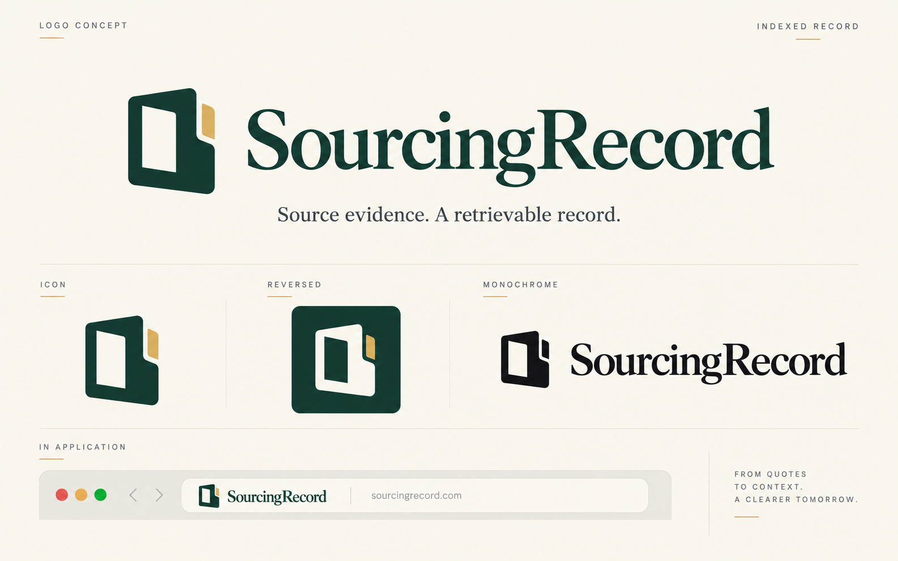
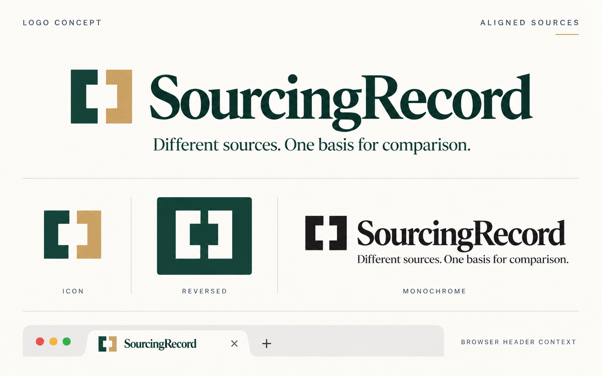
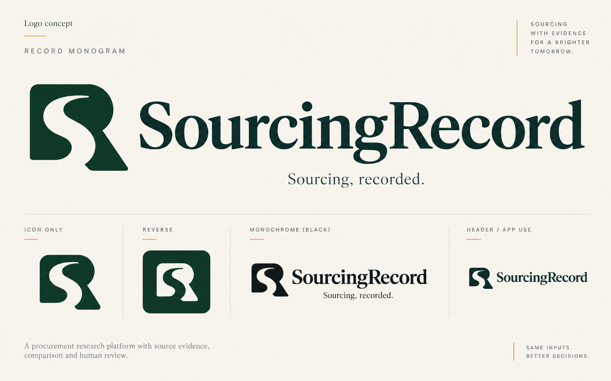

A retrievable record
An indexed form connects the name to documented evidence that a procurement owner can revisit. The index cut gives it a feature beyond a generic file icon.
Logo-symbol research and three original concepts for the selected Commercial Ledger website direction.
Design brief: warm, precise, commercially fluent and contemporary. Deep pine on ivory; a simple compact mark and a legible SourcingRecord wordmark. Express source evidence and comparison without implying automatic approval or certified outcomes.
The research separates visible form, published brand meaning and our design interpretation. A logo can become associated with a business over time; a proposed symbolic explanation is not proof that every viewer will recognize that meaning.
| Brand | Verified evidence | Design lesson for SourcingRecord |
|---|---|---|
| Tropic | The visible mark has a small radiating, asterisk-like form with a dot. The official guide specifies horizontal/vertical lockups, space and light/reverse color treatments; it does not explain the symbol’s meaning. | Pair a compact mark with a readable name; define practical usage. A radiating star would be a weak way to distinguish SourcingRecord from the reference. |
| Linear | A circular symbol with diagonal stripe-like cuts is visible. The guide favors the wordmark where space allows, monochrome use, and ample surrounding space. | A simple silhouette can work across many sizes. The long SourcingRecord name should carry recognition while the mark becomes familiar. |
| Docusign | The official Nexus explanation describes two shapes meeting around an agreement shape. The guide specifies lockup, clear space and one-color usage. | Relating a symbol to the product can be powerful. Avoid recreating its converging-agreement construction or borrowing its size rules. |
| Pactum | Pactum explicitly describes its logo through a Pareto-optimal deal. This is a published company interpretation. | Negotiation trade-offs already have an incumbent-owned brand story. SourcingRecord should emphasize its own record and source relationship. |
| Mercury | The visible identity pairs an intricate circular emblem with a spaced wordmark. No verified explanation of that emblem’s meaning was found in the reviewed official material. | Editorial confidence can come from proportion and typography. SourcingRecord’s small icon should be simpler than an ornamental financial emblem. |
| Ramp | Its official press page offers identity artwork. The current site presents a concise wordmark with a compact distinctive terminal stroke. | Strong lettering can do much of the work. A long name benefits from careful kerning and restrained icon proportions. |
| Zip | The published rebrand story connects the identity to unblocked procurement and open spend channels; that does not establish a specific meaning for each logo shape. | Openings and flow devices are already common category ideas. A symbol needs a distinctive construction, not simply a procurement-themed explanation. |
| Fairmarkit | The current site uses a prominent type-first wordmark. Its company history does not explain a symbol meaning. | Clear typography supports mature positioning. A new mark still needs to be distinguishable beside procurement competitors. |
| Notion | Notion’s own guidance describes its black-and-white cube logo. | A dimensional boxed letter/document is a recognizable existing territory. SourcingRecord should use a flatter, more specific silhouette. |
Research used the configured Perplexity high preset and direct inspection of Tropic and Linear’s official brand pages. Earlier current-session site inspection also supplied visual context for Ramp, Fairmarkit and Mercury. Meanings are only attributed to brands where a first-party statement supports them.
Folded paper, shields, checks, arrows, linked rings, stars and stock initials can be useful in some identities, but each risks a familiar category reading here. A check or shield may suggest approval or protection; an arrow may suggest growth; a star may resemble a generic AI flourish. Those are design interpretations. SourcingRecord should have a distinguishing silhouette before relying on color or explanation.
An indexed form connects the name to documented evidence that a procurement owner can revisit. The index cut gives it a feature beyond a generic file icon.
Unequal source fields aligned to one datum suggest normalization and comparison. The meaning is proposed through composition rather than a winner’s tick.
A custom SR construction ties an abstract compact mark directly to the company name. Letterforms must remain readable and distinctive.
Keep the essential logo one color. Ochre is a supporting brand accent, not a detail needed to identify the mark. Use the full name in the navbar and on business documents; reserve the compact symbol for favicon, avatar and product-navigation contexts.
These are generated exploration boards, not final vector masters. Each board shows one design idea in primary, compact, reverse and monochrome treatments. The selected website direction is the palette and editorial reference; its tentative folded-page icon has not been treated as an approved logo.
Intent: a compact indexed record form with a distinctive cut/open edge. It should suggest retrieval, provenance and a retained decision. This is the closest conceptual fit for SourcingRecord and the Commercial Ledger theme.
Watch for: becoming a generic document, bookmark or letter E/F. The distinguishing index must survive without fine inset lines or ochre accents.

Intent: two open source frames aligned by a shared internal datum, with deliberate negative space. It emphasizes bringing different supplier offers onto a comparable basis.
Watch for: resemblance to a bar chart, an equality symbol, a letter H or a generic analytics icon. The mark should remain a memorable whole, not a miniature diagram.

Intent: a custom SR monogram using an S-shaped negative-space path through an R-derived form. It makes a direct compact connection to the long company name.
Watch for: overly intricate initials, a luxury/property-brand association, or a letter that needs explanation. Prefer one decisive cut and large readable counters.

| Criterion | What to verify |
|---|---|
| Distinctive silhouette | Recognizable in solid black, separated from the name and without the explanation. |
| 16 / 24 / 32px | Render the final vector at actual sizes. Counters stay open; the identifying notch/gap survives. Presentation-board thumbnails are not pixel tests. |
| Wordmark legibility | SourcingRecord reads clearly in desktop and mobile headers; letter spacing and capital S/R distinguish the name without an awkward line break. |
| Theme fit | Works beside the selected editorial serif hero and the product’s functional UI, with pine/ivory light and reverse versions. |
| Reproduction | No dependency on gradients, texture, small ochre accents or thin strokes. Check monochrome print and reversed rendering. |
| Commercial meaning | A source, comparison or record association; no seal, certification claim or automatic-approval implication. |
After selection, refine the geometry, optical spacing and typography; create editable SVG masters, primary/reverse/monochrome lockups, favicon variants and clear-space guidance; then test the actual assets at realistic header and icon sizes. The current boards are candidates, with no trademark clearance implied.
My recommendation after reviewing the concepts: Record Monogram has the strongest compact silhouette; Indexed Record has the most immediate connection to the company’s purpose. The chosen mark should be refined and tested at actual icon sizes before finalizing it.
Exact Image Gen prompt set · Selected website visual research · Website IA and product brief coverage.
Similarity-screening context: USPTO’s explanation of similarity and commercial impression and WIPO’s image-search resource. These resources were researched; no candidate-specific clearance search was conducted.